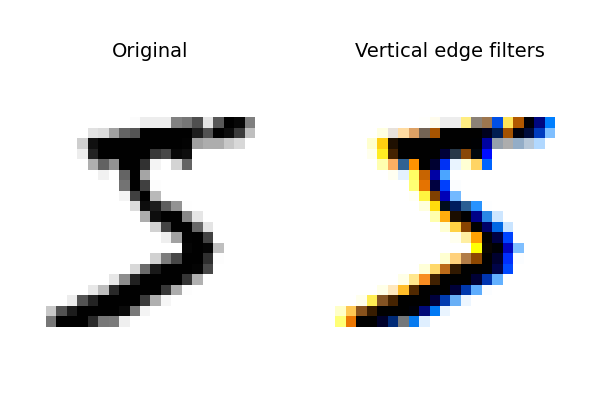
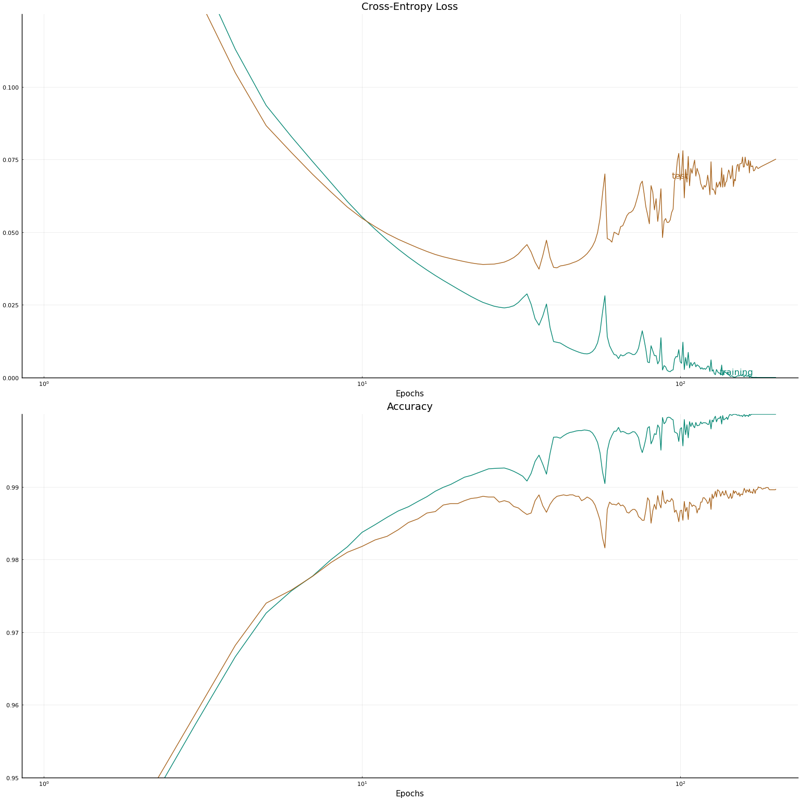
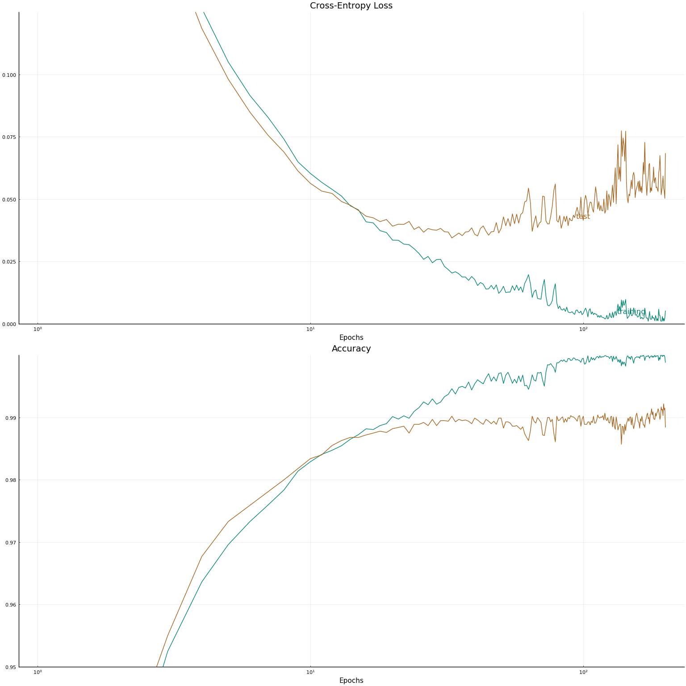
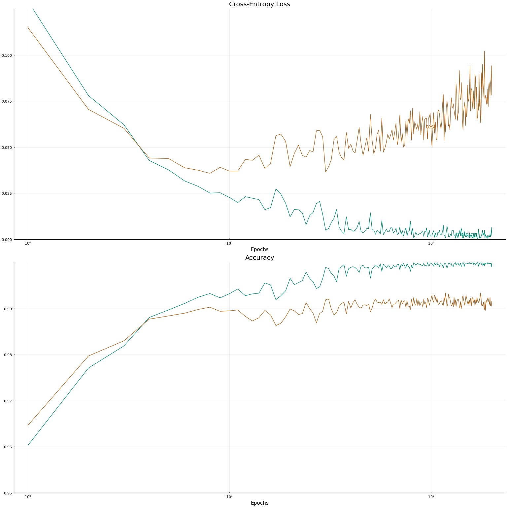
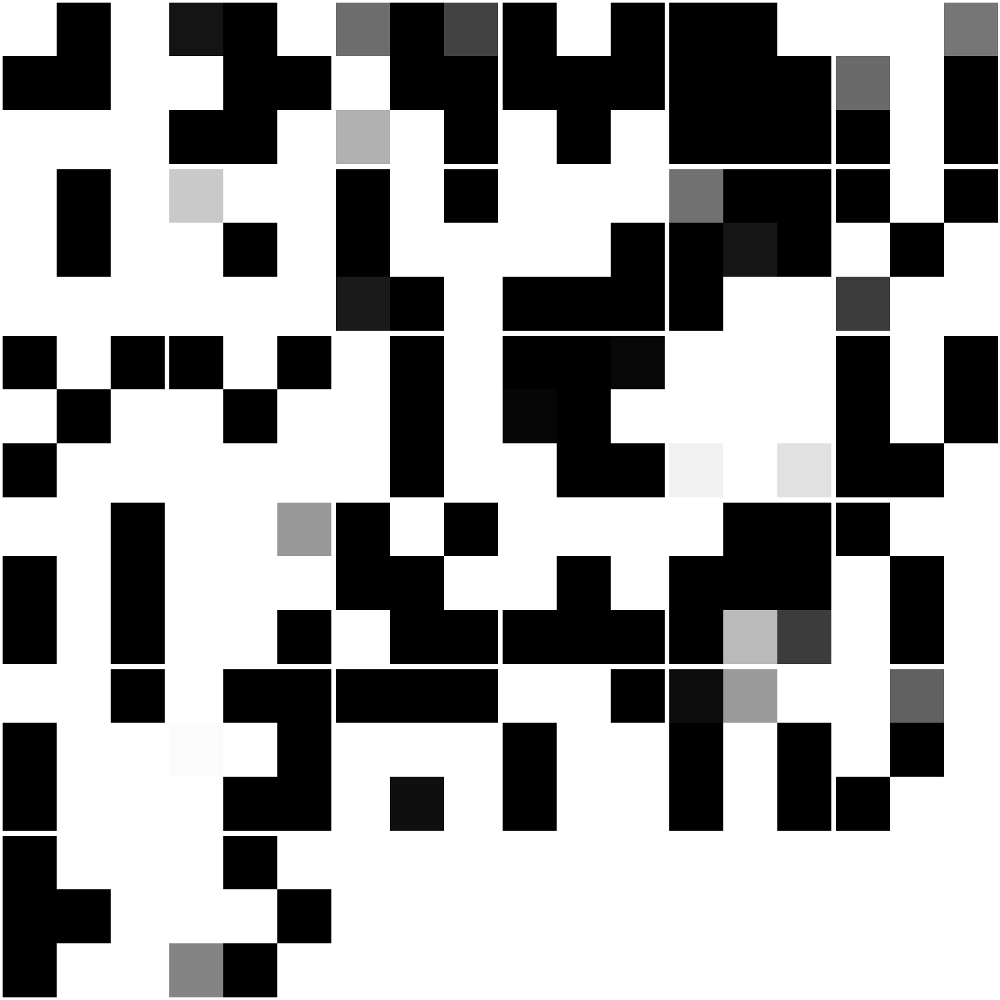

This work is licensed under a Creative Commons Attribution-ShareAlike 4.0 International License
About this document¶
This document was created using Weave.jl. The code is available in on github. The same document generates both static webpages and associated jupyter notebook.
Introduction¶
The previous notes discussed multiple layer feedforward networks, and applied them to image classification. However, state-of-art image classifiers typically do not use feedforward networks. They use convolutional networks, which will be the topic of this document. Convolutional neural networks also have applications to PDEs, see @rackauckas2019conv. They also have potential applications to time series and spatial data.
Additional Reading¶
- @goodfellow2016 Deep Learning especially chapter 9
Knet.jldocumentation especially the textbook- @klok2019 Statistics with Julia:Fundamentals for Data Science, MachineLearning and Artificial Intelligence
Convolutions¶
A convolution is an operation on a set of functions. If $f:\R \to \R$ and $g:\R \to \R$, then their convolution is The convolution is commutative, $(f\ast g)(x) = (g\ast f)(x)$. For functions with other domains, convolutions can be defined analogously. For example, for $f, g: \mathbb{Z} \to \R$,
Kernel density estimation and regression are convolutions. For example, the kernel density estimator can be written as where $\delta_{x_i}(t)$ is the Dirac measure at $x_i$.
Convolutions appear in image processing as blurring and smoothing filters. Taking a local average of pixels is a convolution.

The similarity to kernel regression should be obvious. The 3x3 matrix
1 0 1
0 1 0
1 0 1
in the animation above is called a stencil or a kernel.
In addition to blurring and smoothing, convolutions can detect patterns
in images. For example 1 × 2 filters of [-1 1] and [1, -1] will pick
out vertical transitions from dark to light and vice versa.
Here’s an illustration of how this looks using an image from the MNIST data.
using MLDatasets
using ImageFiltering
using Plots
Plots.pyplot()
train_x, labels = MNIST(split=:train)[:]
imgs = [Gray.(train_x[:,:,i]') for i ∈ 1:size(train_x,3)]
i = 1
plot(plot(RGB.(1 .- imgs[i]), title="Original", aspect_ratio=:equal,
axis=false, ticks=false),
plot(RGB.(1 .- imgs[i] .+ imfilter(imgs[i], centered([-1 1])),
1 .- imgs[i],
1 .- imgs[i] .+ imfilter(imgs[i], centered([1 -1]))),
title="Vertical edge filters", aspect_ratio=:equal,
axis=false, ticks=false),
layout=(1, 2)
)

In this image, the output of one edge filter is yellow, the other is blue, and the original image is black.
From this example, we see that small hand-crafted convolution kernels can pick out patterns, like edges. One idea would be to use the output of these kernels as features in a machine learning model. Another idea is to treat the weigths in a convolution matrix as part of the model to be estimated. This is exactly what convolutional neural networks do.
Example : MNIST¶
Let’s see how convolutional neural networks can be applied to the MNIST data.
The code in this section was adapted from the Flux model zoo.
using Flux, MLDatasets, Statistics
using Flux: onehotbatch, onecold, throttle, @epochs
using Base.Iterators: repeated, partition
using JLD2
using ColorSchemes, ProgressMeter
cscheme = colorschemes[:BrBG_4];
When we were fitting feed-forward networks with this data, we simply treated images as vetors of length $28^2$. That was appropriate there because the model we were using did not explicitly utilize spacial information. With convolutions, we need to preserve spatial information, so we need to treat the images as $28 \times 28$ arrays.
# set up training and testing data
createx(imgdata) = reduce((x,y)->cat(x,y, dims=4),
reshape.(float.(imgdata),28,28, 1) )
X = Float32.(reshape(train_x, 28, 28, 1, size(train_x,3))) |> gpu
Y = onehotbatch(labels, 0:9) |> gpu
test_x, test_y = MNIST(split=:test)[:]
tX = Float32.(reshape(test_x, 28, 28, 1, size(test_x,3))) |> gpu
tY = onehotbatch(test_y, 0:9) |> gpu;
When working with convolutions, Flux.jl wants the data to be stored as
a $K_1 \times K_2 \times C \times N$ array where $K_1 \times K_2$ is the
dimension of the images (or whatever else the data represents), $C$ is
the number of channels. Since we have grayscale images, we have one
channel. Color images would have three channels. Radar and satellite
imagery can have more channels (satellites often collect non-visible
frequencies of light).
Channels are also a useful abstraction throughout the neural network. We usually want to apply multiple convolution filters to extract different features of the images. The output of each convolution is stored in a channel.
Each convolution is intended to pick up some local pattern in the image. It might be useful to modify certain pattens by applying an activation function to the output of the convolution.
Finally, convolutions detect patterns, but for many image classification
tasks, we do not necessarily care exactly where a pattern occurs. A cat
remains a a cat wherever it is located in a picture. Motivated by this,
a “pooling” operation is often applied to the output of convolutions.
These are similar to convolutions with fixed weights. Common pooling
operations include taking the average within a rectangle of fixed size
and taking the maximum. Pooling (and convolution) can reduce dimension
by only looking at non-overlapping (or partially non-overlapping)
regions. In Flux.jl the default for convolutions is to look at every
pixel, and the default for pooling is to look at non-overlapping
regions. This behavior can be changed by changing the stride option.
Mathematically, we can express a convolutional layer as follows. Let $x$ be an $N \times N$ input channel, $\psi$ be an activation function, $b \in \R$ is a bias, and $w$ be $M \times M$ convolution weights, indexed from -M/2 to M/2.
The result of applying the convolution is: where if an index is out-of-bounds simply set that term in the sum to $0$. $P$ is the “padding”. If $P=M/2$, then the size of $x\ast w$ is the same as $x$. If $P<M/2$, the convolution decreases the size of the image. Then if we apply a maximum pooling function with dimension $D \times D$, we get a $N/D \times N/D$ array with elements
The following code defines a convolutional network with three convolutional layers followed by a dense feed-forward layer for the output.
model = Chain(
# First convolution layer, operating upon a 28x28 image
Conv((3, 3), 1=>16, pad=(1,1), relu),
MaxPool((2,2)),
# Second convolution, operating upon a 14x14 image
Conv((3, 3), 16=>32, pad=(1,1), relu),
MaxPool((2,2)),
# Third convolution, operating upon a 7x7 image
Conv((3, 3), 32=>32, pad=(1,1), relu),
MaxPool((2,2)),
# Reshape 3d tensor into a 2d one, at this point it should be (3, 3, 32, N)
# which is where we get the 288 in the `Dense` layer below:
x -> reshape(x, :, size(x, 4)),
Dense(288, 10) #,
# Finally, softmax to get nice probabilities
#softmax
) |> gpu
# count parameters
nparam(m::Chain)=sum(nparam.(m))
nparam(m::Conv)=length(m.weight) + length(m.bias)
nparam(m::Dense)=length(m.weight)+length(m.bias)
nparam(m) = 0
println("There $(nparam(model)) parameters")
There 16938 parameters
Now, let’s train the model. We are going to train the model a few times with slightly different details, so it makes sense to define a function for the training loop.
function accuracy(m, x, y)
# onecold(m(x)) results in very slow code for large x, so we avoid it
coldx = vec(map(x->x[1], argmax(m(x), dims=1)))
coldy = onecold(y)
return(mean(coldx.==coldy))
end
function train_mnist!(model, X, Y, tX, tY,
modelname;
loss = (x,y)->Flux.logitcrossentropy(model(x), y),
accuracy = (x,y)->accuracy(model, x, y),
batchsize=length(tY),
reps_per_epoch=1,
maxepochs=200,
rerun=false
)
Xsmall = X[:,:,:,1:1000]
Ysmall = Y[:,1:1000]
evalcb = () -> @show(loss(Xsmall, Ysmall), loss(tX,tY), accuracy(Xsmall,Ysmall), accuracy(tX,tY))
parts=Base.Iterators.partition(1:size(X,ndims(X)), batchsize);
batches = [(X[:,:,:,p], Y[:,p]) for p in parts];
data = repeat(batches, reps_per_epoch);
# The model and entire training data do not fit in my GPU
# memory. For monitoring progress we will occassionally print the
# loss and accuracy summed over the entire data.
function sumloss(batches)
L = zero(Float32)
for i in 1:length(batches)
L += loss(batches[i]...)
end
L /= length(batches)
end
function acc(batches)
L = zero(Float32)
for i in 1:length(batches)
L += accuracy(batches[i]...)
end
L /= length(batches)
end
opt = ADAM(0.001)
acctest = zeros(maxepochs)
acctrain = zeros(maxepochs)
losstest = zeros(maxepochs)
losstrain = zeros(maxepochs)
@info("Beginning training loop...")
best_acc = 0.0
last_improvement = 0
e = 0
docdir = joinpath(dirname(Base.pathof(NeuralNetworkEconomics)),
"..","docs")
progress = Progress(maxepochs, 1, "Training model", 50)
while e<maxepochs
e += 1
modelfile = joinpath(docdir,"jmd","models","$modelname-$e-epochs.jld2")
if rerun || !isfile(modelfile)
@time Flux.train!(loss, Flux.params(model), data, opt, cb = throttle(evalcb, 20))
# save model
cpum = cpu(model)
losstrain[e]= sumloss(batches)
acctrain[e] = acc(batches)
losstest[e]=loss(tX,tY)
acctest[e] =accuracy(tX,tY)
@save modelfile cpum losstrain acctrain losstest acctest
else
@load modelfile cpum losstrain acctrain losstest acctest
model = gpu(cpum)
end
next!(progress)
if (acctest[e]>best_acc)
best_acc = acctest[e]
last_improvement=e
end
# If we haven't seen improvement in 3 epochs, we stop (could also
# try droping learning rat but it would take time) we are cheating
# here by using thest test accuracy as a stopping criteria ...
if ((e - last_improvement) >= 3) && (opt.eta <= 1e-6)
@warn(" -> At epoch $e, haven't improved in 3 epochs. Stopping training.")
break
end
end
return(model=model,
losstrain=losstrain[1:e], acctrain=acctrain[1:e],
losstest=losstest[1:e], acctest=acctest[1:e])
end
train_mnist! (generic function with 1 method)
Now we train the model. We will begin by following a similar training strategy as in the previous notes. That is, we will use large batches and a low number of passes through the data per-epoch.
out = train_mnist!(model, X, Y, tX, tY, "conv";
batchsize=2500,
reps_per_epoch=2,
maxepochs=200,
rerun=false
)
@show maximum(out.acctest)
maximum(out.acctest) = 0.99
0.99
Since I save the model to disk to avoid waiting for it to rerun everytime I change this document, the above output does not include the training time. It takes roughly 10 seconds per epoch.
In terms of testing accuracy, this model does quite well. The deep feedforward network with nearly 12 million parameters from the previous notes, had an accuracy greater than 98%. The convolutional network used here with 16 thousand parameters has a accuracy of 0.99%. The training time of these two models was roughly the same.
function training_plot(out)
ll = Int(round(length(out.losstrain)*0.75))
lt = Int(round(length(out.losstrain)*0.5))
plot(
plot([out.losstrain, out.losstest], xscale=:log10, xlab="Epochs",
title="Cross-Entropy Loss",
ylims=(0.0, 0.125),
annotations=[(ll, out.losstrain[ll],
Plots.text("training", pointsize=12, valign=:bottom,
color=get(cscheme,1))),
(lt, out.losstest[lt],
Plots.text("test", pointsize=12, valign=:bottom,
color=get(cscheme,0)))], leg=false,
color_palette=get(cscheme,[1,0])
),
plot([out.acctrain, out.acctest], xscale=:log10, xlab="Epochs",
title="Accuracy",
ylims=(0.95, 1.0),
color_palette=get(cscheme,[1,0]), leg=false
),
layout=(2,1)
)
end
training_plot(out)

Small Batches¶
If you look at the code in the Flux model zoo for this model, it claims to achieve over 99% testing accuracy. The code above is mostly identical to the model zoo, but it differs in two ways. One is that the model zoo uses much smaller batches of 128 observations. The second is that the model zoo adds some gaussian noise to the images during training. We will look at how each of these changes affect the results.
First, let’s just reduce the batch size to 128.
model = Chain( # same as before, but resetting initial values
Conv((3, 3), 1=>16, pad=(1,1), relu),
MaxPool((2,2)),
Conv((3, 3), 16=>32, pad=(1,1), relu),
MaxPool((2,2)),
Conv((3, 3), 32=>32, pad=(1,1), relu),
MaxPool((2,2)),
x -> reshape(x, :, size(x, 4)),
Dense(288, 10)
) |> gpu
smallbatch = train_mnist!(model, X, Y, tX, tY, "conv-smallbatch";
loss=(x,y)->Flux.logitcrossentropy(model(x),y),
batchsize=128,
reps_per_epoch=1,
maxepochs=200,
rerun=false
)
@show maximum(smallbatch.acctest)
training_plot(smallbatch)
maximum(smallbatch.acctest) = 0.9926

Smaller batches have improved the accuracy from 98.83% to just over 99%. Note that although the number of epochs are roughly the same as above, the number of gradient descent iterations is much higher. The total run-time is roughly the same.
Data Augmentation¶
The example in the model zoo also augments the training data by adding a small amount of Gaussian noise to the training images. Data augmentation is used by the best models among the MNIST benchmarks on LeCun’s website. For example @ciresan2010 randomly distorts images with small rotations and stretching. Adding Gaussian noise is not as well geometrically motivated, but it has the advantage of being very easy to implement.
We will add a $\epsilon \sim N(0, 0.1)$ to each pixel in the images. Here is what this looks like for a few images
plot([plot(RGB.(1 .- 0.1*randn(size(imgs[i]))) .- round.(imgs[i])) for i in
1:9]..., xlab="", ylab="", aspect_ratio=:equal, axis=false, ticks=false)

With this added noise, the digits are still easily recognizable, so we would hope that our model can classify them.
addnoise(x, σ) = x .+ σ.*gpu(randn(eltype(x), size(x)))
@show accuracy(out.model, addnoise(tX,0.1f0), tY)
@show accuracy(smallbatch.model, addnoise(tX,0.1f0), tY)
Error: DimensionMismatch: A has dimensions (10,288) but B has dimensions (3
,960000)
The models trained above do a pretty good job of classifying noisy images, but not quite as well as the original. What if we train the models with noise?
Here, we will train with the original large batches and added noise.
model = Chain( # same as before, but resetting initial values
Conv((3, 3), 1=>16, pad=(1,1), relu),
MaxPool((2,2)),
Conv((3, 3), 16=>32, pad=(1,1), relu),
MaxPool((2,2)),
Conv((3, 3), 32=>32, pad=(1,1), relu),
MaxPool((2,2)),
x -> reshape(x, :, size(x, 4)),
Dense(288, 10)
) |> gpu
outn = train_mnist!(model, X, Y, tX, tY, "conv-augrandn";
loss=(x,y)->Flux.logitcrossentropy(model(x .+ 0.1f0*gpu(randn(eltype(x), size(x)))),y),
batchsize=2500,
reps_per_epoch=2,
maxepochs=200,
rerun=false
)
@show maximum(outn.acctest)
maximum(outn.acctest) = 0.9922
0.9922
training_plot(outn)

With large batches, adding noise has improved the accuracy very little
Small Batches and Data Augmentation¶
Let’s try combining small batches and data augmentation.
model = Chain( # same as before, but resetting initial values
Conv((3, 3), 1=>16, pad=(1,1), relu),
MaxPool((2,2)),
Conv((3, 3), 16=>32, pad=(1,1), relu),
MaxPool((2,2)),
Conv((3, 3), 32=>32, pad=(1,1), relu),
MaxPool((2,2)),
x -> reshape(x, :, size(x, 4)),
Dense(288, 10)
) |> gpu
smallnoisy = train_mnist!(model, X, Y, tX, tY, "conv-augrandn-smallbatch";
loss=(x,y)->Flux.logitcrossentropy(model(x .+ 0.1f0*gpu(randn(eltype(x), size(x)))),y),
batchsize=128,
reps_per_epoch=1,
maxepochs=200,
rerun=false
)
@show maximum(smallnoisy.acctest)
training_plot(smallnoisy)
maximum(smallnoisy.acctest) = 0.9934

This gives the highest test accuracy we have achieved so far. Let’s look at some of the missclassified digits.
tlabels = test_y
timgs = [Gray.(test_x[:,:,i]') for i ∈ 1:size(test_x,3)]
# predicted labels
mlabels = onecold(cpu(smallnoisy.model(tX))).-1
@show mean(mlabels.==tlabels) # = accuracy
@show sum(mlabels .!= tlabels)
miss=findall(mlabels .!= tlabels)
plot( [plot(RGB.(1 .- timgs[i]),
title="$(tlabels[i]) as $(mlabels[i])",
axis=false, ticks=false,
aspect_ratio=:equal) for i in miss[1:16]]...)
mean(mlabels .== tlabels) = 0.9916
sum(mlabels .!= tlabels) = 84
Looking inside the Black Box¶
Our fitted model is somewhat of a black box, but when we are working with images and convolution, we can somewhat look inside it. We can display the images that are generated by each convolutional and/or max pool layer. Let’s do this for one image.
i = 1
m = smallnoisy.model
figs = Array{typeof(plot()), 1}(undef, 3)
j = 1
for l in 1:length(m)
global j, figs
if (typeof(m[l]) <: MaxPool)
layer = m[1:l](reshape(X[:,:,:,i], 28,28,1,1))
figs[j] = plot( [plot(RGB.(cpu(1 .- layer[:,:,c,1])), aspect_ratio=:equal,
axis=false, ticks=false) for c in
1:size(layer,3)]...)
j += 1
end
end
plot(RGB.(cpu(1 .- X[:,:,1,i])), aspect_ratio=:equal, axis=false,
ticks=false)
The original is above. Below is are the output of the first convolution + max pool layer.
figs[1]
Now the second
figs[2]
And the last
figs[3]

These 32 three by three images then get stacked into a vector and passed into the final dense layer.
I’m not sure that there’s much to learn from looking at these images. Maybe it’s best to keep the box closed.